We expect parking to be a bit tight. It's first-come, first-served, in a public park, and all the large group picnic areas in the park are already completely booked up. Carpooling is encouraged, and Uber and Lyft both say they'll run pickups from inside Huddart Park given a 15-20 minute wait.
Our recommendation for carpoolers would be to park near the Zwierlein area and walk over to the Amphitheater. There's a paved road (no sidewalk) from there to the ceremony in the Amphitheater, or you can take...Here's a walkthrough from Zwierlein to the Amphitheater through the park itself. The total distance is one-sixth of a mile. Iz stop to take some photos on a seven minute walkthrough:
(1) Starting here from Zwierlein, head off to the right:
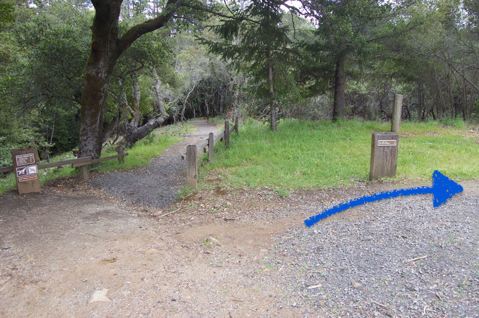(2) Here's what the trail looks like as you're starting out:
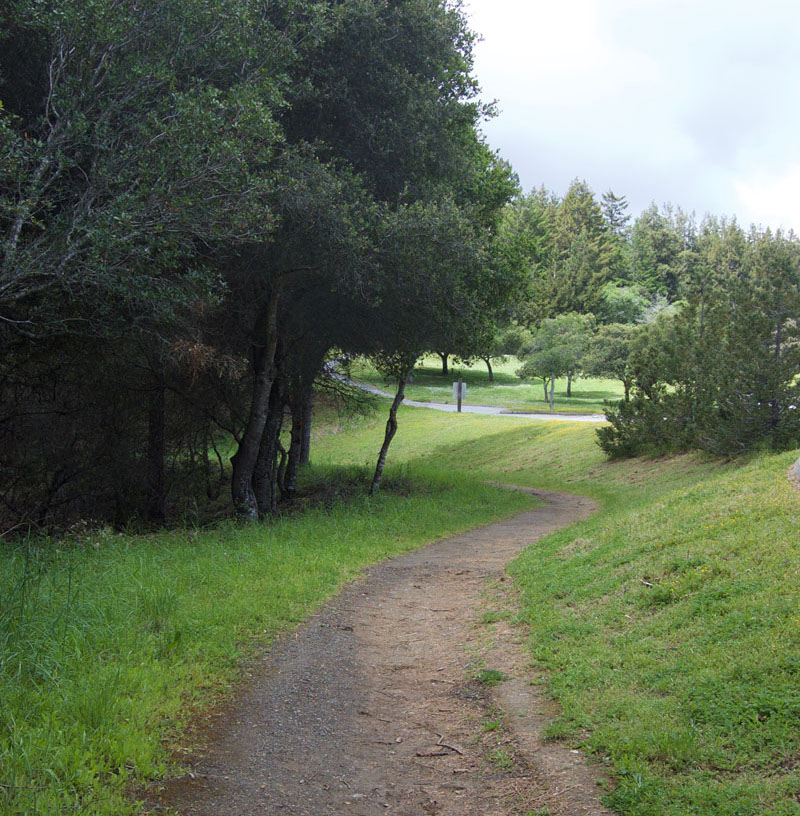(3) When you come to this gate, head on through it:
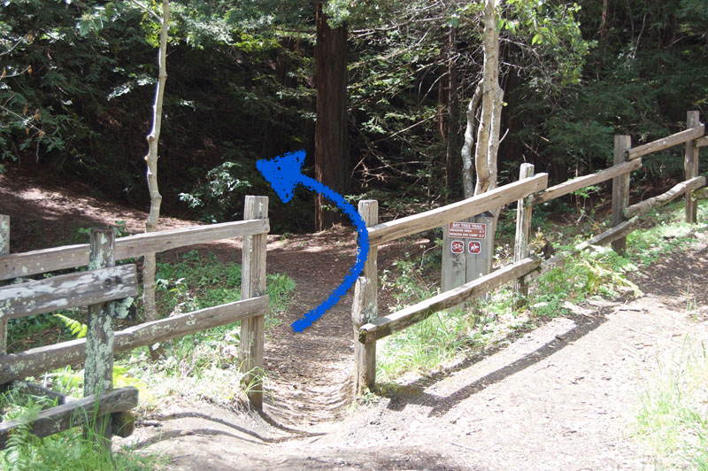(4) The trail. It's nice! We like redwoods.
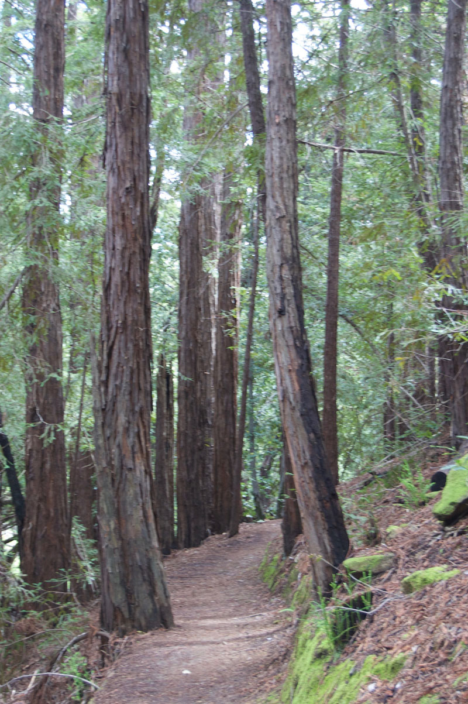(5) You'll reach this trail marker, and you want to head uphill, to the right. The marker should indicate "TO SEQUOIA DAY CAMP", up and to the right:
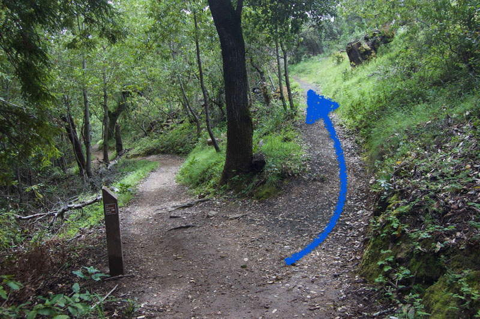(6) From here, there are no more forks or turns. Just a nice path, with redwood saplings and madrone trees.
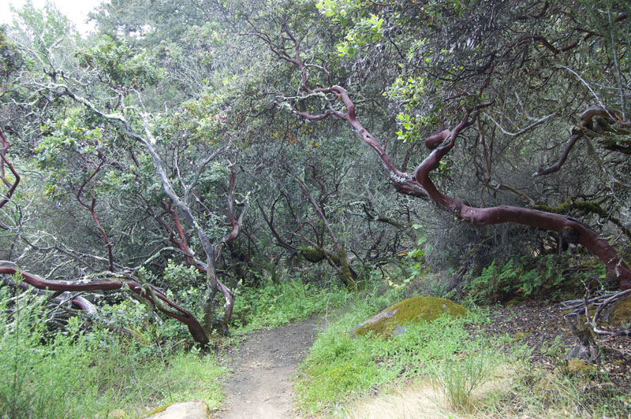 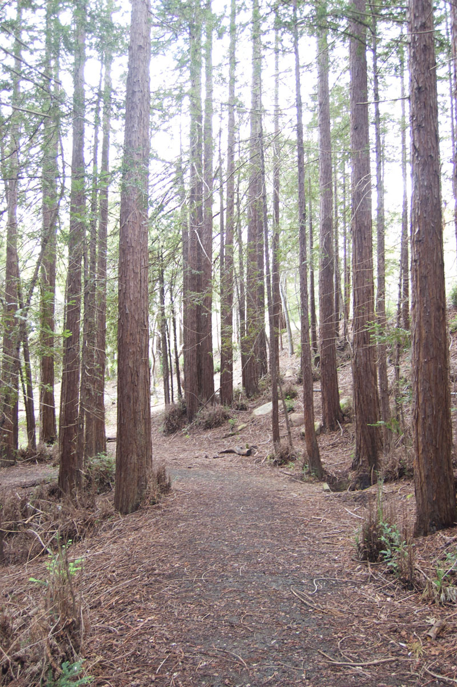 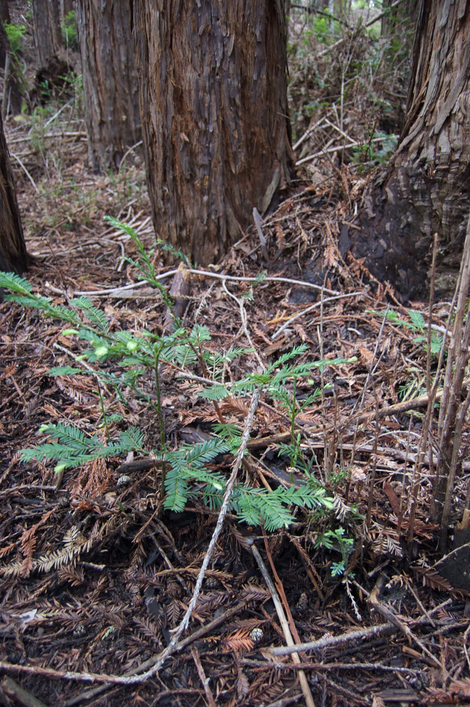 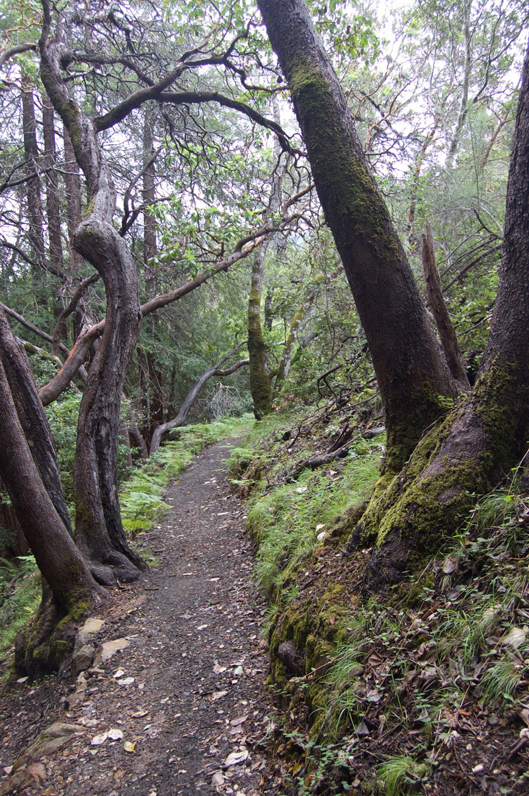(7) As the trail starts to open up like this, you're reaching the end:
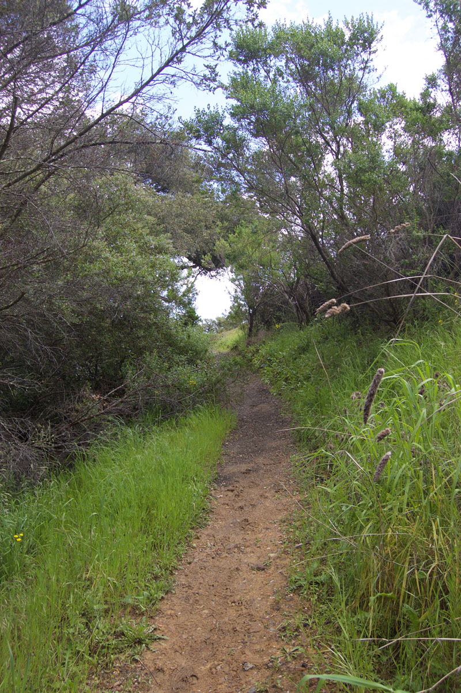(8) And this is it! The Amphitheater picnic area. We'll have some drinks waiting, where everyone can relax until walking on over to the amphitheater itself.
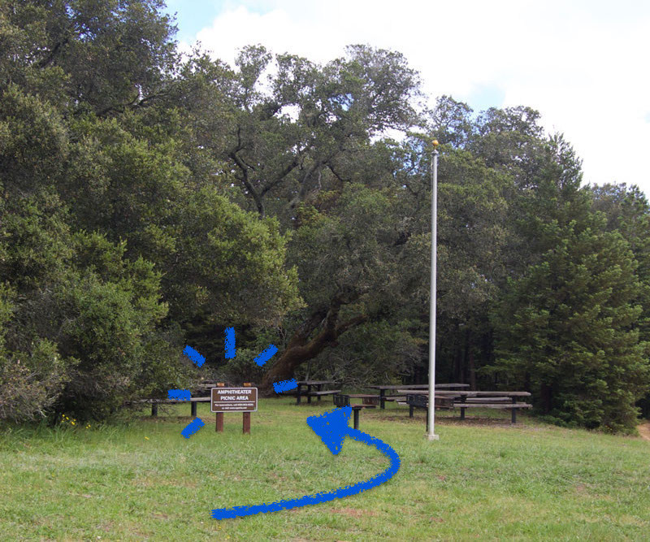(9) Then the ceremony happens.
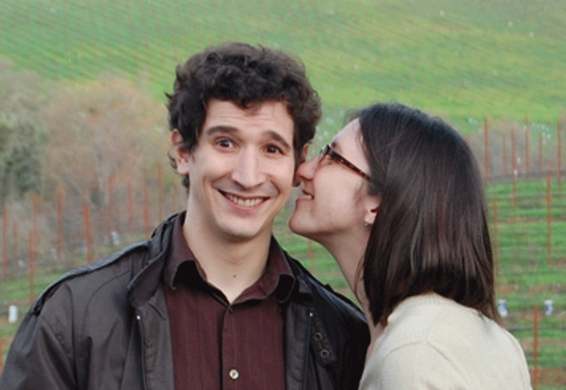(10) On the way back, stay to the right.
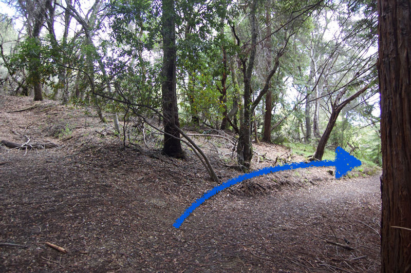(11) Here's our old friend, the sign post from step (5). Follow it towards the Zwierlein area, off to the left.
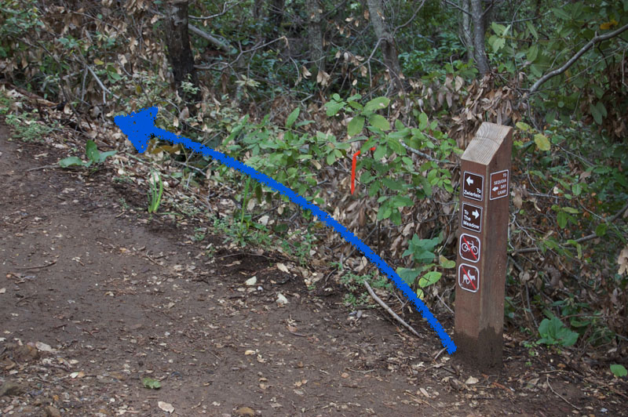Once we're all back and settled after the ceremony, we'll start in on:
We've arranged a Greek buffet to be catered back in the Zweirlein area. If you have questions or concerns about dietary restrictions, please let us either know directly or in the RSVP form. But! We should have you covered. Brian's got a nut allergy, so no worries there, Greek cuisine means the gluten-avoiders should be fine, and there's vegetarian fare to boot.